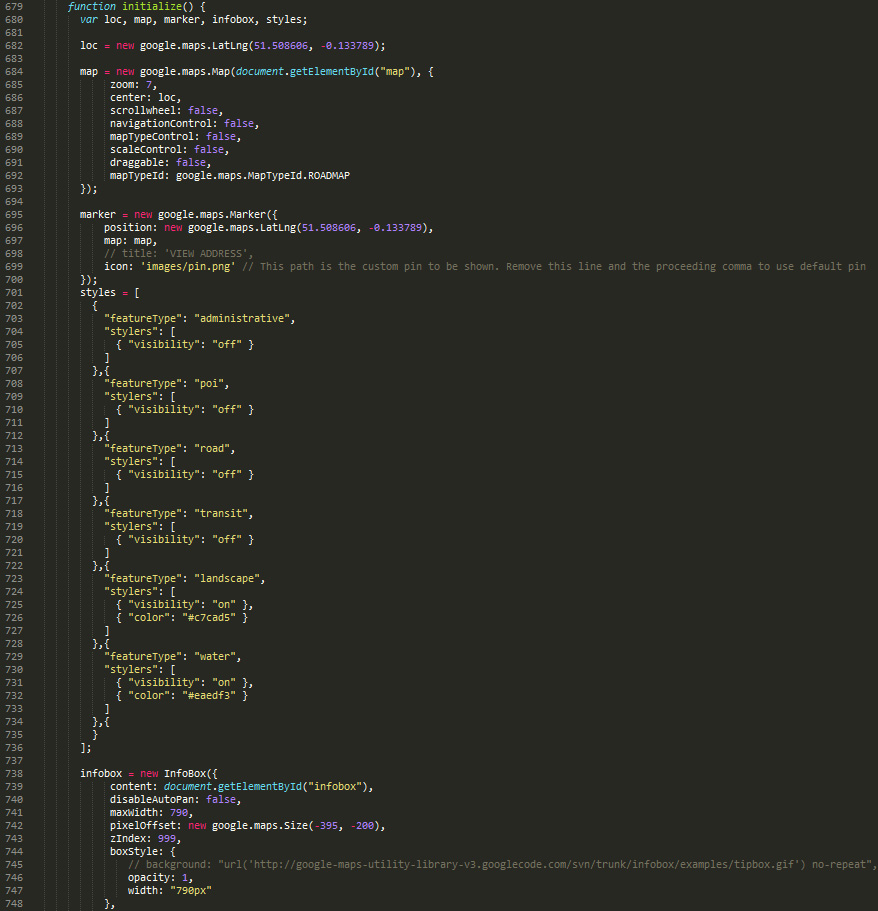
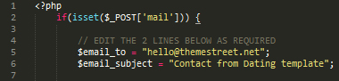
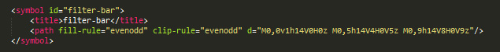
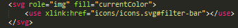

Created: 24th of March 2015.
By: ThemeStreet.Net
Email: support@themestreet.net
Thank you for purchasing "BERLINER" multipurpose website HTML5/CSS3 responsive bootstrap template. If you have any questions that are beyond the scope of this help file, please feel free to email via our user page contact form here. Thanks so much!
This template is a responsive multipurpose fixed layout with one column (in some sections are few columns). All sections of this template are nested in div with class layout. Every section has own #id (name). Here is the general structure:
Whole code in HTML file are well commented, and indented.
If you would like to edit the color, font, or style of any elements in one of these columns, you can do that in CSS files located inside css folder.
Our theme using one CSS file located in css folder. It is style.css file.
The file is separated into sections using:
/* --- + BASIC STYLES + --- */ /* --- + ANIMATIONS + --- */ /* --- + LAYOUT + --- */ /* --- + HEADER + --- */ /* --- + BUTTONS + --- */ /* --- + FORMS + --- */ /* --- + HEADER + --- */ /* --- + VALIDATION POPUP + --- */ /* --- + SCROLL TO TOP + --- */ /* --- + CONTENT + --- */ /* --- + MEDIA --- */
If you would like to edit a specific section of the site, simply find the appropriate label in the CSS file, and then scroll down until you find the appropriate style that needs to be edited.
All SCSS files are located in sass folder.
Basic styles and variables are located in _base.scss file.
Layout located in few scss files:
- BODY - BASIC STYLESThis theme imports several Javascript files located in js folder.
[preloader script] [script for scroll to top] [contact function initwatermark] [contact scroll on link] [scripts for scroll over ] [scripts for Close navbar on click] [scripts for add text in button] [scripts for img to background] [scripts for Izotope] [scripts for video ] [script for magnific popup ] [script for slider subheader] [script for slider follow] [script for slider team] [script for animate numbers] [script for validation] [map script]
- You can change coordinates for marker (pin) and for map. Second coordinates are for pin. First coordinates are for position on the map. See picture below.
You can change at 5th line of file form_data.php email where you want to receive emails from your website. Also this file is well commented. See image below for explanation.
We've used the following images, videos, fonts and icons:
All Icons are our custom made product. You can use it on your products only with extended license.Our icons are in Icons folder, in icons.svg. In this file change svg code
In html file change path in html tag "use".
Also we've used the following scripts:
Once again, thank you so much for purchasing this HTML5 template. If you have any questions relating to this template, please feel free to email via our user page contact form here. We'll do our best to assist.
ThemeStreet.Net
{kind=link}